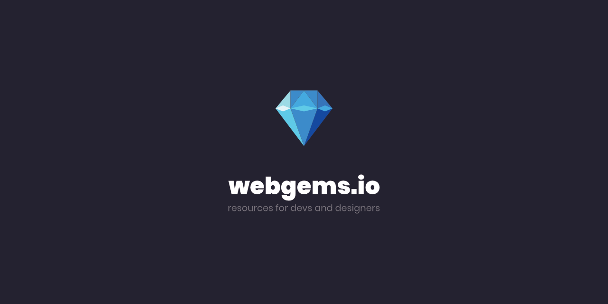
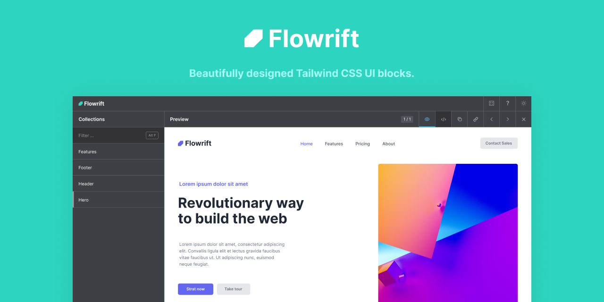
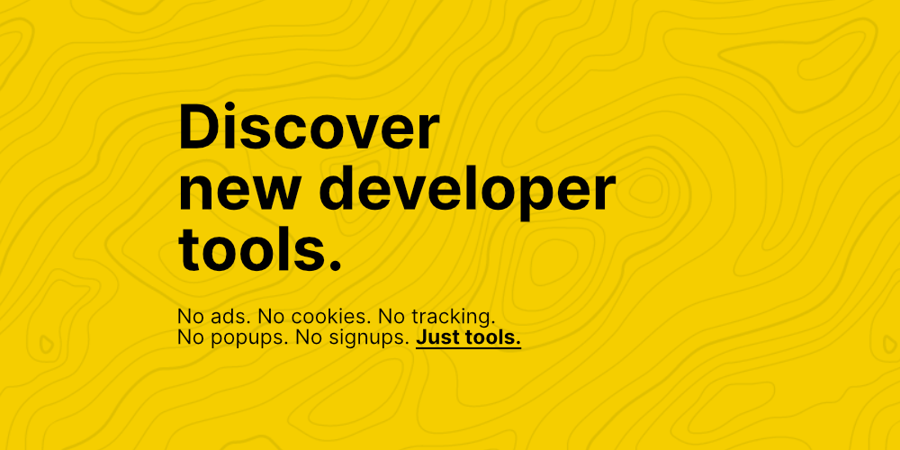

La cantidad de herramientas para desarrolladores front-end está creciendo, y eso es algo que los propietarios de empresas emergentes también deben tener en cuenta. Aunque los desarrolladores tienen la libertad de elegir sus herramientas preferidas, los propietarios de empresas emergentes también deben aprender los fundamentos del desarrollo exitoso de aplicaciones web.
WEBGEMS
Webgems.io es un lugar de paso para que los desarrolladores y diseñadores encuentren nuevos recursos y más. Como principiante, a veces no es fácil encontrar lo que necesita, ya que no sabe dónde buscar qué.
Por lo tanto, creamos este proyecto para tener los mejores y más comunes recursos para principiantes y veteranos en un solo lugar, algo así como una lista de marcadores para desarrolladores y diseñadores, que contiene solo las mejores gemas que existen.
FLOWRIFT
Flowrift es una biblioteca hecha de bloques de interfaz de usuario Tailwind CSS bellamente diseñados. Todos los bloques son HTML estándar y funcionan con la configuración predeterminada de Tailwind CSS. Vaya a lo grande o a lo pequeño: apile bloques uno encima del otro para crear diseños de página completa o copie selectivamente pequeños fragmentos de código. Tú imaginación es el único límite.
WHATDEVSNEED
Whatdevsneed.com Este programa es un software libre para compartir una lista de herramientas de desarrolladores seleccionadas con otros. Es posible que puedas conocer algunas y enumerar las que necesites. Se mezclan aleatoriamente en cada carga del sitio web.
HTML-CSS-JS

HTML-CSS-JS.com Esta pagina web tiene un editor en linea de HTML, CSS y JS con vista previa instantanea. Si sigues desarrollando tus conocimientos haz una prueba con esta herramienta!.
CSS TRICKS

CSS-Tricks.com Aprender nuevos trucos de CSS es una de las mejores maneras de cambiar el diseño de su sitio web.